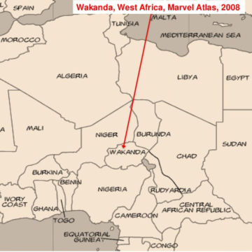

DESCRIPCIÓN
Wakanda es un país ficticio creado por Marvel Studios como el hogar de "La Pantera Negra" un soberano de este reino que bajo este manto tiene como deber cuidar a su nación de todas las amenazas que este afronte
A pesar de ser un lugar ficticio, tiene una larga historia tras de sí, por cuanto su estudio resulta interesante
UBICACIÓN
La ubicación exacta de este país es un enigma, aunque se tienen registros de mapas que lo ubican en puntos geográficos reales en la región de África, cercanos a países como Uganda, Kenia y Etiopía
